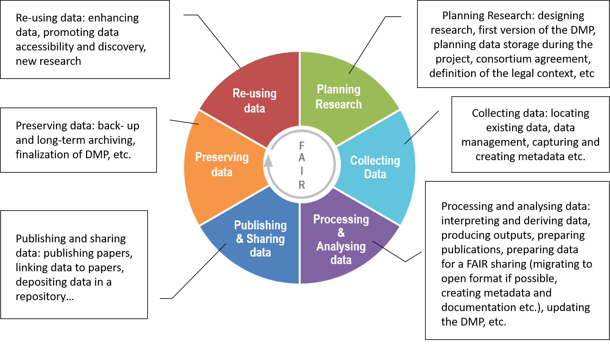
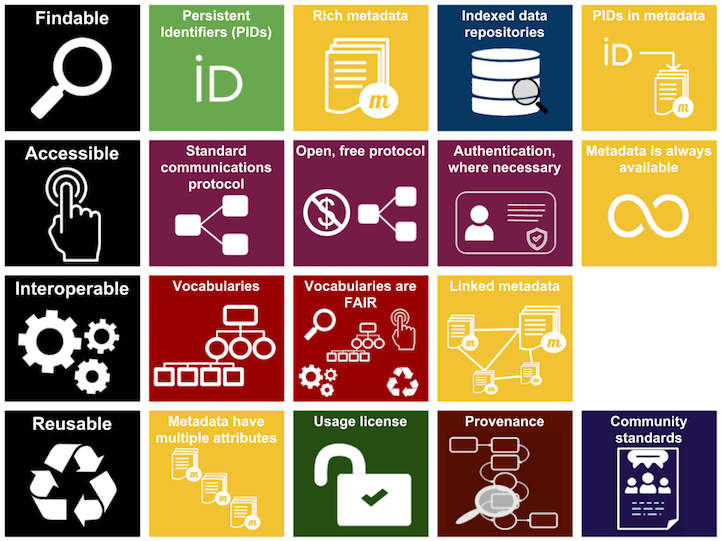
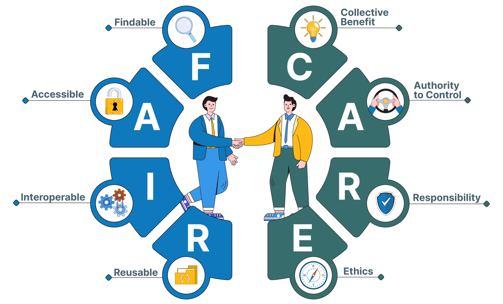

Organize, Clean & Enrich Data
With Archifiltre and OpenRefine
SCD & Pôle Numérique - UPPA
2026-02-09
Welcome!
Today’s Agenda
- Introduction: Research data & FAIR principles (10 min)
- Archifiltre: Explore your data organization (20 min)
- Break (5 min)
- Storing & Backing up: Best practices (20 min)
- OpenRefine: Hands-on data cleaning (60 min)
- Q&A & Wrap-up (5 min)
Learning Objectives
By the end of this workshop, you will be able to:
- Understand key methods for organizing research data
- Effectively sort and structure your datasets
- Use powerful tools for data cleaning and quality control
Research Data Basics
What are Research Data?
Factual records (numerical scores, textual records, images and sound) used as primary sources for scientific research, and that are commonly accepted in the scientific community as necessary to validate research findings.
Source : OECD, OECD Principles and Guidelines for Access to Research Data from Public Funding, Paris, 2007
The Research Data Lifecycle
Source: Callisto
FAIR Principles
Image credit: ARDC licensed under a Creative Commons Attribution 4.0 International License
FAIR Principles Explained
Findable
- Persistent identifiers
- Rich metadata
Accessible
- Open protocols
- Clear access conditions
Interoperable
- Standard formats
- Vocabularies & ontologies
Reusable
- Clear licensing
- Provenance information
Why This Matters
- Reproducibility of research
- Collaboration with colleagues
- Compliance with funder requirements
- Long-term preservation of your work
- Increased visibility and citations
FAIR / OPEN

Image source : Consortium of European Social Science Data Archives (CESSDA)
FAIR / CARE
Image source : Consortium of European Social Science Data Archives (CESSDA)
File Organization Best Practices
File Naming Conventions
Good examples:
2026-02-09_interview_participant-01_v1.docx
experiment-data_2026-01_temperature.csv
thesis_chapter-03_draft-02.pdfBad examples:
Final.docx
Final_FINAL.docx
data.csv
thesis new version (1).pdfFile Naming Rules
- Use dates:
YYYY-MM-DDformat (ISO 8601) - No spaces: use hyphens
-or underscores_ - Be descriptive: but concise
- Version numbers: v01, v02 or draft-01, draft-02
- Avoid special characters: é, à, /, , ?, *, etc.
- Use lowercase: for consistency
Directory Structure
my-research-project/
├── 01-raw-data/
├── 02-processed-data/
├── 03-analysis/
├── 04-results/
├── 05-manuscripts/
├── documentation/
│ ├── codebook.md
│ └── README.md
└── archive/Archifiltre
What is Archifiltre?

Archifiltre is a free tool to:
- Visualize your file tree structure
- Identify duplicates and unused files
- Clean up your directories
- Document your data organization
- Prepare data for archiving or sharing
Archifiltre Features
Visual Analysis
- Interactive treemap
- File size visualization
- Date analysis
- Type distribution
Practical Tools
- Duplicate detection
- Batch operations
- Tagging system
- Export reports
Live Demo: Archifiltre
Follow along!
- Open Archifiltre on your computer
- Select a research folder to analyze
- Explore the visualization
What to look for:
- Large files taking up space
- Old files not modified recently
- Duplicate files
- Poorly organized subdirectories
Hands-On Exercise (10 min)
- Choose one of your research folders
- Load it into Archifiltre
- Identify:
- Duplicates
- Files you could delete or archive
- Folders that need reorganization
Tip
Don’t delete anything yet! Just explore and take notes.
Break (5 minutes)
Storing & Backing Up Data
The 3-2-1 Backup Rule

- 3 copies of your data
- On 2 different media types
- With 1 copy off-site
Storage Solutions at UPPA
Nuage (Nextcloud)
- https://nuage.univ-pau.fr
- University-hosted cloud storage
- Sync clients for desktop & mobile
- Collaborative features
Note
Ideal for active research data and collaboration
National Solutions: Huma-Num
ShareDocs
- For humanities & social sciences researchers
- FileRun-based platform
- Compatible with Nextcloud clients
- Documentation: https://documentation.huma-num.fr
File Formats for Preservation
Preferred formats:
- Text: .txt, .pdf/A, .xml
- Images: .tiff, .png, .jpg
- Data: .csv, .json, .xml
- Video: .mp4, .mkv
Avoid if possible:
- Proprietary formats
- Outdated formats
- Formats requiring specific software
- Encrypted formats (for archiving)
Resources
DORANum - French Research Data Portal
- File naming guide: https://doranum.fr
- Storage & archiving best practices
- Format recommendations
- Video tutorials (in French)
Stanford - University Libraries
- Data best practices and case studies
- Name files
- Format files
- Sensitive data
OpenRefine
What is OpenRefine?
OpenRefine is a powerful tool for:
- Cleaning messy data
- Transforming data formats
- Reconciling data with external sources
- Extending data with additional information
Why Use OpenRefine?
- Works with large datasets (millions of rows)
- Non-destructive: keeps history of all operations
- Reproducible: export and reuse cleaning scripts
- No programming required (but supports expressions)
- Free and open-source
Common Data Quality Issues
Structure issues:
- Inconsistent formatting
- Extra whitespace
- Mixed case (UPPER/lower)
- Wrong data types
Content issues:
- Duplicates
- Missing values
- Spelling variations
- Inconsistent dates
Live Demo: OpenRefine Interface
Key components:
- Project creation
- Data preview
- Facets & filters
- Cell transformations
- History & undo
Hands-On Exercise: Dirty Data
We’ll clean a messy dataset together
Issues in the data:
- Name: inconsistent capitalization, extra spaces
- Email: duplicates
- Date: multiple formats, missing values
- Country: inconsistent capitalization
- Score: “N/A” values mixed with numbers
Step 1: Load the Data
- Click “Create Project”
- Choose “This Computer”
- Select
dirty_data.csv - Click “Next”
- Verify preview and click “Create Project”
Step 2: Clean the “Name” Column
Remove extra whitespace:
- Click dropdown on “Name” column
- Select:
Edit cells→Common transforms→Trim leading and trailing whitespace
Standardize capitalization:
- Same menu:
Common transforms→To titlecase
Step 3: Find Duplicates in “Email”
- Click dropdown on “Email” column
- Select:
Facet→Text facet - Look at the facet panel (left side)
- Click on “Sort by: count”
- Duplicates appear at the top!
Tip
In a real project, you’d decide how to handle duplicates (merge, keep first, etc.)
Step 4: Standardize Dates
Transform date format:
- Click dropdown on “Date d’inscription” column
- Select:
Edit cells→Transform... - Enter expression:
value.replace("/", "-").replace(" ", "-")- Preview and click OK
Step 5: Clean “Country” Column
Combine operations:
- Click dropdown on “Country” column
- Trim whitespace (as before)
- Apply titlecase (as before)
Check results with facet:
Facet→Text facet- Verify all countries are now standardized
Step 6: Fix “Score” Column
Replace “N/A” with null:
- Click dropdown on “Score” column
- Select:
Edit cells→Transform... - Enter expression:
if(value == "N/A", null, value)- Click OK
Step 7: Export Clean Data
- Click “Export” (top right)
- Choose format: “Comma-separated value”
- Save as
clean_data.csv
Don’t forget:
- You can export your cleaning operations (JSON) to reuse them!
- Click
Undo / Redotab →Extract...
OpenRefine Best Practices
- Always work on a copy of your data
- Use facets to explore data before transforming
- Check the preview before applying transformations
- Take notes of your cleaning steps
- Export operations for reproducibility
- Validate results after each major transformation
Going Further with OpenRefine
Advanced features:
- Reconciliation: match your data with Wikidata, VIAF, etc.
- Clustering: find similar values automatically
- GREL expressions: powerful transformation language
- API calls: enrich data from external sources
Learn more:
- Programming Historian tutorials
- OpenRefine documentation: https://openrefine.org/docs
Wrap-Up
What We Covered Today
- Research data & FAIR principles
- File organization best practices
- Archifiltre for visualizing & organizing
- Storage & backup strategies
- OpenRefine for data cleaning
Key Takeaways
Remember
- Organize early: don’t wait until you have chaos
- Name carefully: your future self will thank you
- Backup regularly: 3-2-1 rule
- Clean systematically: use tools like OpenRefine
- Document everything: README files are your friends
Additional Tools to Explore
Tropy - for organizing research images
- https://tropy.org
- Perfect for archival photos, scanned documents
- Powerfull built-in metadata management
Resources & Documentation
All materials available:
- Codeberg repository: https://codeberg.org/uju/ED_Organize-Clean-Enrich-Data
- Archifiltre: https://archifiltre.fabrique.social.gouv.fr
- OpenRefine: https://openrefine.org
- DORANum: https://doranum.fr
Contact:
- julien.rabaud@univ-pau.fr
Questions?
Thank you for your participation
Feedback
Please share your thoughts on today’s workshop.
Good luck with your research data

Personal and Research Data Management: Organize, Clean & Enrich - UPPA SSH Doctoral School